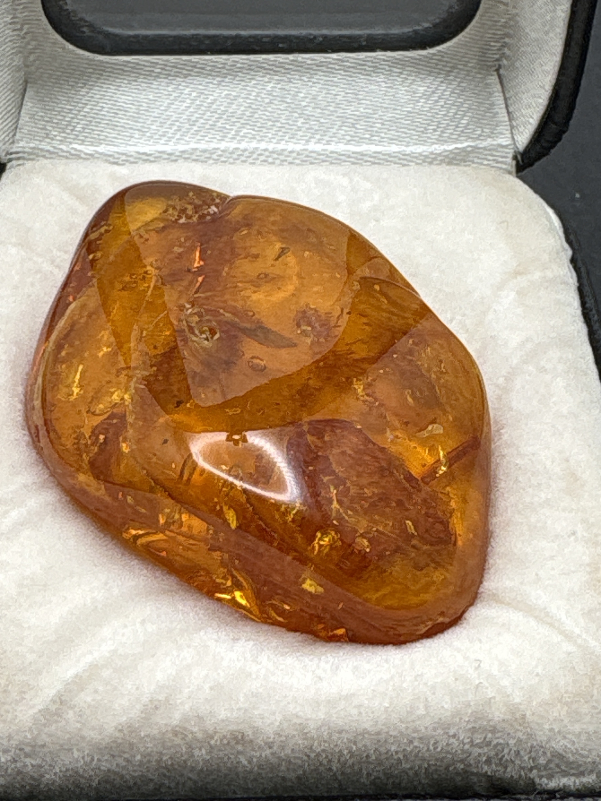

The Gem Drawer › No. 56

A translucent orange amber piece with internal flow lines and inclusions.
| Catalogue no. | #56 |
|---|---|
| As labeled | Amber |
| Shape / cut | Irregular polished/tumbled (not faceted) |
| Weight | 36.94 ct |
| Measurements | Not recorded |
| Colour | Orange/amber |
| Clarity / condition | Not recorded |
Interested in this stone, or in the collection as a whole? Terry VanWormer can answer questions about it.
Click here to inquireor email Terry directly at maxrebo34@gmail.com